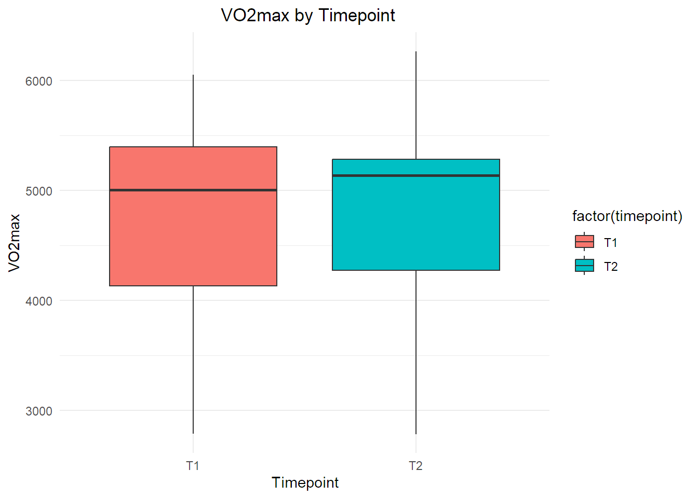
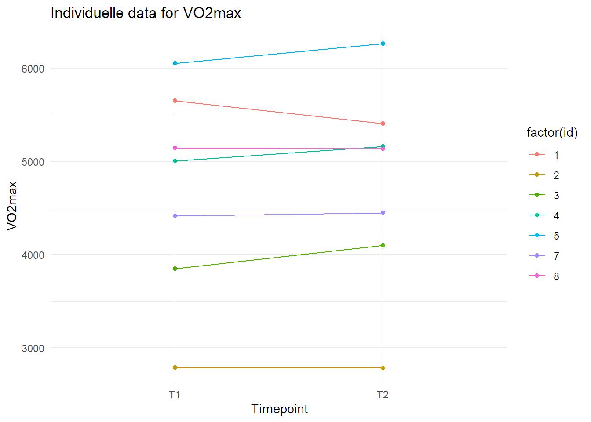

2 Reliabilitet og reproduserbar dataanalyse
1 Metode
1.1 Forberedelser
Forberedelser til utholdenhetstester involverte flere trinn. Først ble utstyret kalibrert. Dette inkluderte justering av temperatur og luftfuktighet ved hjelp av enhetens kontroller. For å gjøre dette, ble “Ambient Conditions” valgt, og temperaturen og luftfuktigheten ble sjekket på gradestokken. Eventuelle justeringer ble gjort ved å trykke “F1” for å endre luftfuktighet og temperatur, og deretter trykke “F12” for å lagre endringene.
Videre ble volumkalibrering utført ved å sette inn “Trippel V” og koble til “Sample line”. En slange ble deretter festet fra Oxycon´s miksekammer´s bakside til volumkalibreringspumpen. “Volume Calibration” ble valgt, og kalibreringen ble startet ved å trykke “F1”. Spaken på pumpen ble beveget forsiktig frem og tilbake til grafene på skjermen flatet ut på omtrent 4 på y-aksen. Det ble pumpet frem til tallene ble vist i høyre margen. Deretter ble verdiene for oksygen (O2) og karbondioksid (CO2) sjekket. Kalibreringen ble ansett som vellykket hvis feilmarginen var innenfor 1,0 %, noe som tilsvarer et område mellom 99,0 og 101,0. Hvis kalibreringen ikke ble godkjent, ble den gjentatt ved å trykke “F9”. Hvis den ble godkjent, ble resultatene lagret ved å trykke “F12”. Gasskalibrering var neste steg. “GAS Calibration” ble valgt og “F1” ble trykket for å starte kalibreringen. Kalibreringen fortsatte til tallene viste seg i høyre marg. Igjen ble verdiene for oksygen (O2) og karbondioksid (CO2) sjekket. Kalibreringen ble ansett som godkjent hvis tallene var innenfor en feilmargin på 1,0, noe som tilsvarer et område mellom –1,0 og 1,0. Gassflasken ble deretter lukket i riktig retning, og hvis kalibreringen ikke var godkjent, kunne den gjentas ved å trykke “F9”. Hvis den var godkjent, ble resultatene lagret ved å trykke “F12”.
Alle forberedelsene for testen ble grundig gjennomført før selve testingen startet. Først ble munnstykket satt sammen, og neseklypen ble funnet frem. Deretter ble forsøkspersonen veid uten sko og med så lite klær som mulig. Etter veiingen ble 300 g trukket fra vekten som følge av klærnes vekt. Forsøkspersonens data ble deretter lagt inn i systemet ved å trykke på “New Patient”. Her ble prosjektnavn, ID-nummer, fødselsdato, kjønn, høyde og vekt (hvor 300 g ble trukket fra) ført inn. Videre ble «Lode Device Manager 10» startet, og sykkelen ble nøye justert for forsøkspersonen. Dette inkluderte å bytte til riktig pedal og notere ned disse justeringene. Krankarmen ble stilt inn til 172,5. Kalibreringen av krankarmene ble utført, og vi stilte inn Lode-sykkelen til forsøkspersonens preferanser. På pre-testen ble disse innstillingene lagret.
Sluttforberedelsene inkluderte å feste den ene enden av slangen til munnstykket og den andre enden til maskinen, med slangen teipet fast til sykkelen. Til slutt ble VO2-opptaket klargjort ved å trykke på “Mixing Chamber”. Det ble dobbeltsjekket at innstillingene viste “small mouthpiece” og “30 s delta time” i det oppgitte vinduet, og deretter ble klargjøringen fullført ved å trykke “ok”. Ved å trykke “F1” ble opptaket startet, og etter 15 s var maskinen klar for selve testen.
1.2 Før testingen
Før testen startet, ble forsøkspersonene informert om testprosedyren. De ble instruert om å gjennomføre hele testen sittende, og det ble festet en teipbit på nesen deres for å sikre at neseklipsen ikke falt av. Forsøkspersonen tilpasset sykkelen og setestillingen med hjelp fra testlederen, og denne setestillingen ble notert for bruk på neste testdag. Temperaturen og luftfuktigheten i rommet ble også notert. Submaksimal utholdenhetstest Testprosedyren startet med en submaksimal utholdenhetstest der forsøkspersonene tråkket på 75 W for kvinner og 100 W for menn ved en tråkkfrekvens på 90 ± 5 RPM i 90 s. Forsøkspersonene ble informert om å ta på neseklype og munnstykke 30 s før målingene begynte. Oksygenopptaket ble deretter målt hvert 30. sekund fra 2 til 4 min. 20 s før de 4 minuttene var ferdige, ble forsøkspersonene bedt om å vurdere sin opplevde anstrengelse på Borgs skala. Etter 4 min økte motstanden til 125 W for kvinner og 150 W for menn, og neseklypen og munnstykket ble tatt av/ut. Forsøkspersonene informerte om hvor de lå på Borgs skala, og denne prosessen ble gjentatt på neste trinn. Forsøkspersonene fikk deretter en 2 min aktiv pause på 50 W og ble bedt om å forbli sittende på sykkelen gjennom hele den aktive pausen.
1.3 Maksimalt oksygenopptak (VO2-maks) test
Etter submaksimal utholdenhetstest fulgte VO2-maks testing, som startet på 150 W og økte med 25 W hvert min til utmattelse. Utmattelse ble definert som når forsøkspersonene ikke lenger klarte å opprettholde en tråkkfrekvens på > 60 RPM. Det var fri tråkkfrekvens på begge testdagene, og forsøkspersonene hadde neseklype og munnstykke gjennom hele testen. Klokken ble nullstilt etter en 5 minutters pause når opptaket viste et helt minutt pluss 1 sekund. Forsøkspersonene fikk beskjed om å sykle til utmattelse (dvs. RPM < 60), og verbal kommunikasjon ble benyttet for å informere dem underveis. Watt-maks og sekundene siden siste økning ble notert, og forsøkspersonene ble spurt om deres opplevde anstrengelsesnivå på Borgs RPE-skala umiddelbart etter fullført test. Etter testen forlot ikke forsøkspersonene sykkelen, og opptaket ble lagret ved å trykke “F1”, etterfulgt av “F12” for å lagre opptaket. All data fra de to høyeste målingene ble notert. Maximum accumulated oxygen uptake (MAOD) test Etter VO2-maks testing, gjennomførte forsøkspersonene en Maximum Accumulated Oxygen Uptake (MAOD) test. De syklet på 50 W for menn og kvinner i fem min før MAOD-testen startet. MAOD-testen involverte at forsøkspersonene syklet så lenge de kunne ved den høyeste effekten (W) de oppnådde i minst 30 s under VO2-maks testing. De ble instruert om å opprettholde samme tråkkfrekvens som under den submaksimale testen. Testlederen ga verbal oppmuntring når forsøkspersonene viste tegn til utmattelse. Testen ble avsluttet når forsøkspersonene ikke lenger kunne opprettholde en tråkkfrekvens på > 60 RPM. Forsøkspersonene ble spurt om deres opplevde anstrengelsesnivå på Borgs skala umiddelbart etter avsluttet test.
1.4 Etter testingen
Etter testingen ble alt utstyr desinfisert og ryddet opp. Eventuelle endringer i sykkelinnstillinger ble også notert. Til slutt ble dataene notert ned ved å gå inn på skjermrapporten “Hil_MIX_30.” Tiltak for å sikre reliabilitet For å sikre reliabilitet ble det gjennomført en rekke tiltak under testprosedyren. Testene ble gjennomført på nøyaktig samme måte hver gang, med standardisering av alle faktorer, til det beste av vår kunnskap, som kunne påvirke resultatene. Testene ble utført til samme tidspunkt på døgnet. Videre ble det lagt vekt på å opprettholde tilnærmet lik luftfuktighet og temperatur i testrommet, med nøye notering av disse forholdene. Da det gjaldt kalibrering av utstyret, ble det benyttet samme utstyr på begge testdagene. Det ble også påsett at de samme vektskivene ble brukt på både testdag 1 og testdag 2. For å sikre nøyaktige data av kroppsvekt, veide forsøkspersonene seg med så lite klær som mulig, uten sko, og det ble trukket fra 300 g fra vekten som følge av klær. Dette ble gjentatt eksakt likt på begge testdagene. Under testingen ble hele prosedyren gjennomført sittende. Det var også viktig å ha kontinuitet med hensyn til testledere og observatører, så de samme personene ble benyttet på begge testdagene. Videre ble forsøkspersonene instruert til å ha to dagers restitusjonstid mellom testdag 1 og testdag 2 for å minimere eventuelle påvirkninger fra tidligere testing. Testlederne opplyste ikke om VO2-maks nivået under selve testen, og den samme testlederen ble brukt på begge testdagene. Testlederne fulgte protokollen på samme måte, og det ble lagt vekt på å gi tilnærmet lik tilbakemelding og engasjement. Under VO2maks-testen ble tilbakemeldingen gradvis økt utover testen for å motivere forsøkspersonene til sitt ytterste. Det ble også notert hvor mye og når forsøkspersonene hadde spist før testdag 1, og dette ble gjentatt på testdag 2. Spesielt var det viktig å sikre inntak av energirik mat og drikke. Dette er en rekke viktige tiltak for å sikre høy reliabilitet i fysiologisk testing (1). Forsøkspersonene fikk klare retningslinjer, inkludert å avstå fra hard fysisk trening de siste 48 timene før testing, opprettholde tilnærmet lik fysisk aktivitet og døgnrytme de siste 48 timene før de to testdagene. I tillegg ble de instruert om å unngå inntak av nikotin og/eller alkohol de siste 48 timene før testing. Inntak av koffein på testdagene ble også regulert for å sikre lik mengde. Forsøkspersonene ble instruert om å ha samme type og mengde mat og drikke samme dag som testen, med siste måltid minst 2 timer før testing. Det var også krav om å bruke samme klær og sko på begge testdagene for å minimere variabler som kunne påvirke resultatene. Disse tiltakene ble nøye implementert for å sikre pålitelige og sammenlignbare resultater mellom de to testdagene.
1.5 Databehandling
VO2maks (ml/min) ble regnet ut ved å finne gjennomsnittet av målingene de to siste hele halvminuttene under VO2maks-testen. Maksimalt akkumulert oksygenunderskudd (MAOD) ble regnet ut med data fra både den submaksimale testen og MAOD-testen ved hjelp av en formel hentet fra boken Physiological Tests for Elite Athletes 2nd Edition (2).
1.6 Statistiske analyser
Før vi utførte statistiske analyser, ble datasettet rengjort for eventuelle feilregistreringer eller manglende data. Statistiske analyser ble utført i programvaren RStudio (3), og ble organisert i Microsoft Excel (4). Deskriptiv statistikk er presentert som gjennomsnitt, standardavvik og minimums- og maksimumsverdi. Basert på anbefalingene fra (5) benyttet vi variasjonskoeffisient (CV %) for å undersøke test-retest reliabiliteten til følgende tester: VO2-maks, Wmaks og MAOD.a. Dårlig reliabilitet ble ansett som CV > 10 %, akseptabel reliabilitet ble ansett som CV = 5–10 % og god reliabilitet ble ansett som CV < 5 % (6,7). Variasjonskoeffisienten (standardavvik delt på gjennomsnittet) brukes ofte som et mål på presisjon og reproduserbarhet av data innen kvantitativ vitenskap (8,9). For å videre undersøke om testene var reliable nok til å observere betydningsfulle forskjeller anvendte vi minste betydningsfulle forskjell (SWC). Beregningen av SWC ble gjort i henhold til (10). Når CV % ≤ SWC, ble testen ansett i stand til å oppdage betydningsfulle forskjeller (11).
2 Resultater
Deskriptiv statistikk av forsøkspersonenes VO2-maks, Wmaks og MAOD.a ved T1 og T2 er presentert i Tabell 2.1. I tillegg er en boksplott, som viser test-retest reliabiliteten til VO2-maks, Wmaks og MAOD.a, illustrert i Figur 2.1. Figur 2.2 viser individuelle for hver forsøksperson for T1 og T2. Tabell 2.2 viser CV og standardavvik for hver av de tre utfallsvariablene for hver forsøksperson. Det ble funnet god test-retest reliabilitet for VO2-maks og Wmaks (CV = 1,84 og 4,77, henholdsvis), samt akseptabel test-retest reliabilitet for MAOD.a testen (CV = 6,77)(se Tabell 2.3). Videre ble det observert at VO2-maks testen var reliabel nok til å oppdage betydningsfulle forskjeller i VO2-maks (SWC = 3,67). På tross av å ha vist henholdsvis god og akseptabel test-restest reliabilitet, ble det funnet at Wmaks og MAOD.a testen ikke var reliable nok til å observere betydningsfulle forskjeller i Wmaks og MAOD.a (SWC = 4,04 og 0,88, henholdsvis).

| Variabel | Gjennomsnitt | Standardavvik | Median | Minimum | Maksimum |
|---|---|---|---|---|---|
| Alder | 24.14 | 2.18 | 24.00 | 22.00 | 29.00 |
| Bodyheight | 179.43 | 4.60 | 176.00 | 175.00 | 187.00 |
| Vekt | 77.64 | 7.97 | 79.20 | 60.60 | 88.90 |
| Vo2max | 4729.43 | 1071.11 | 5072.00 | 2787.00 | 6266.00 |
| w.max | 421.43 | 82.54 | 437.50 | 275.00 | 525.00 |
| MAOD.a | 69.34 | 17.43 | 77.88 | 43.21 | 92.41 |
| id | cv_vo2max | cv_wmax | cv_maoda | std_dev_vo2max | std_dev_wmax | std_dev_MAODa |
|---|---|---|---|---|---|---|
| 1 | 3.15 | 10.88 | 3.41 | 34.79 | 10.61 | 0.55 |
| 2 | 0.03 | 6.15 | 4.51 | 0.14 | 3.54 | 0.73 |
| 3 | 4.50 | 4.88 | 2.32 | 35.78 | 3.54 | 0.22 |
| 4 | 2.13 | 11.47 | 7.68 | 21.64 | 10.61 | 1.26 |
| 5 | 2.43 | 0.00 | 4.47 | 29.98 | 0.00 | 0.80 |
| 7 | 0.56 | 0.00 | 2.22 | 4.95 | 0.00 | 0.23 |
| 8 | 0.11 | 0.00 | 22.68 | 1.13 | 0.00 | 2.33 |
| Variable | Mean Coef. of Variation (0.2) | Mean Std. Deviation (0.2) |
|---|---|---|
| VO2max | 1.84 | 18.34 |
| W.max | 4.77 | 4.04 |
| MAOD.a | 6.76 | 0.88 |
3 Metodisk diskusjon
Noen aspekter ved metoden kan i retrospekt ha vært suboptimale, og følgelig ha påvirket resultatene i en negativ retning. Under den submaksimale testen ble testdeltakerne bedt om å sykle på den samme tråkkfekvensen som de ville sykle på under MAOD-testen. Ettersom belastningen under den submaksimale testen er mye lavere enn under MAOD-testen, kan tråkkfrekvensen oppleves kunstig høy under den submaksimale testen, og følgelig føre til en dårlig arbeidsøkonomi. For å fjerne feilkilden, kunne man ha individualisert hvilken watt den enkelte testdeltaker syklet på under de submaksimale dragene, slik at oksygenopptaket blir representativt for den gitte motstanden. Mengden verbal tilbakemelding fra testleder til forsøksperson under VO2-maks- og MAOD-testen kunne variere mellom T1 og T2. Dette kan skyldes at testlederne var noe tilbakeholdne på T1, og ble mer selvsikre på T2. Dette kan tenkes å ha påvirket testdeltakerne sin innsats i varierende grad mellom T1 og T2. Flere av testdeltakerne hadde Wmaks som varierte mye mellom første og andre testdag. Det regjerer således tvil om LODE-sykkelen som ble benyttet under testingen samsvarte med den motstanden vi stilte den inn på. Dette kan ha påvirket testresultatene.
4 Konklusjon
For å konkludere, viste testene varierende reliabilitet. Noen av testene viste svært god reliabilitet for noen av forsøkspersonene, og dårlig reliabilitet for andre. Vi konkluderte med at dette hovedsakelig skyldtes at Lode-sykkelen hadde varierende motstand på en gitt watt. På grunn av disse begrensningene, kan vi ikke være sikre på at en ny test ville gi de samme resultatene som testene utført her. Fremtidige studier bør se til at sykkelen har konsekvent motstand, individuelt tilpasse watten på de submaksimale dragene og standardisere verbal tilbakemelding.